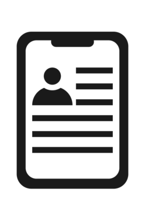

Felix Guzman

Education
Computer Science A.S (3.8 GPA), BMCC, New York City, 2024
Experience
Dev-Ops Intern, Cyber Security Company Inc
- Learned about CI/CD Pipelines and automation functions, especially DAST for finding website vulnerabilities.
- Collaborated with a team of interns in Dev-Ops and Creative Positions.
CTE Assistant, Technology High
- Assisted with lesson plans and created fun technology projects.
- Helped students with Web Development and Network Fundamentals.
- Prepared and optimized computers for IT classes.
Skills
- HTML/CSS, and JS
- Python
- C/C++
Interests
- Game Development
- Graphic Design
- Music Composition